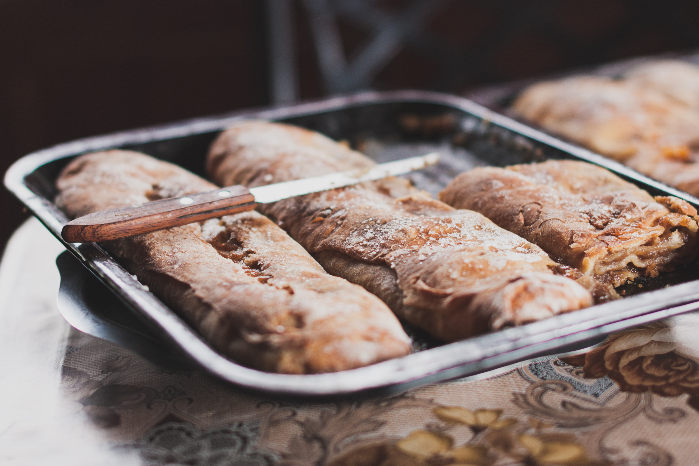

치아바타(ciabatta)는 인공첨가물을 사용하지 않고 통밀가루, 맥아, 물, 소금 등의 천연 재료 만을 사용해 만든 담백한 맛의 이탈리아 빵이다. 1982년 이탈리아의 베네토 주 아드리아(Adria)에서 개발된 빵으로 역사는 짧지만 오늘날 이탈리아를 대표하는 빵 중의 하나이다. 천연 재료만을 사용해서 만들어 담백한 빵 맛이 인기 비결 중 하나이지만, 프랑스 바케트에 맞서 이탈리아 빵의 위상을 높이고자 했던 전직 카레이서 아르날로 카발라리(Arnaldo Carvallari)의 제빵 연구와 마케팅 노력으로 세계적으로 유명해진 빵이기도 하다. 겉은 파삭하고 속은 부드러운 치아바타는 햄, 치즈 등 간단한 속재료를 넣어 파니니를 만들어 먹는 빵으로도 잘 알려져 있다.